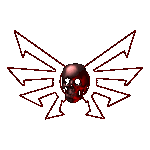

1) OFFICIAL NAME AND COLOURS
Your official nickname is [QUAD] X, where X is the name shown on your member page.
When you use the clan tag, you must use your official nickname. Any exception must be approved by the clanleader. Once approved, an alternative nickname may be listed on your member page as a secondary nickname.
During FFA games, friendly duels, training sessions and friendly clanwars, you may use any nickname you want. During official matches, however, you must use your official nickname.
As a [QUAD] member, your official colours are 1 6, brown and gold.
2) QUAD AND OTHER GAMES
You are free to play other videogames and join clans in other games, but you cannot be an official member of another NetQuake clan.
You do not need to use the [QUAD] tag in other games. [QUAD] is a NetQuake clan, and the tag represents the clan within NetQuake.
3) BASIC QUAD RULES
A member may be removed from the clan at any time for breaking these basic rules:
- Treat clan members and opponents fairly and respectfully. Offensive behaviour that harms other players will not be accepted.
- Do not disappear from the clan without explanation. We do not want ghosts in the clan. We want members who can and want to play.
- Do not make important decisions on behalf of the clan without consulting the clanleader. This includes arranging official clanwars.
- Never use cheats during [QUAD] clanwars or while playing on public servers with the [QUAD] tag. [QUAD] is, and always will be, against every form of cheating.
- Attend official training sessions whenever possible.
- Do not play as an official member of another NetQuake clan.
4) CLAN DECISIONS
Only the clanleader can make official decisions concerning recruitment, clanwars and participation in leagues.
Before an important decision is made, all clan members will be invited to discuss it in the clan chat room. Every member may express an opinion, and every serious suggestion will be appreciated.
The clanleader is not a god and can make mistakes. If you believe that something is going wrong, you must speak to the clanleader so that a solution can be found.
After listening to the clan, the clanleader has the final word and accepts responsibility for the decision.
5) ACTIVITY AND ABSENCE
If you expect to be absent from the servers or unable to attend a clan meeting, inform the clanleader by email.
A member who is repeatedly or unjustifiably absent may be declared inactive. To return to active status, the member must be present again for a period appropriate to the length of the absence.
The purpose of this rule is not to punish occasional absence. It is to distinguish active members from people who have left the clan without saying anything.
6) CLANWARS
All active members will have the opportunity to play in clanwars.
Inactive members and apprentices cannot take part in official clanwars until they return to active status or complete their apprenticeship.
Selection for an individual match may depend on availability and the needs of the clan, but every active member remains part of the team.
7) SPOT THE BOSS
When a clan member uses the [QUAD] tag on a game server and the clanleader is also present, the clanleader must wear the [QUAD] tag too.
This began as a "spot the boss" game during the early Quake years and later became a [QUAD] tradition.
Traditions are part of the clan. Keep this one alive.
8) TRAINING
The official [QUAD] training day is Thursday, once a week. Try to be present whenever possible.
Additional training sessions may be arranged before an important challenge, but attendance at those extra sessions is not compulsory.
Official training is not only about improving individual skill. It is also where members learn to play together as a clan.
9) ITALIAN ROOTS
[QUAD] is still an Italian clan.
Some news, forum posts and conversations may therefore appear in Italian. International players and visitors are welcome, but the clan will not abandon its origins.
10) QUAD IS A CLAN, NOT JUST A TAG
Members should help keep the clan alive by playing together, staying in touch and welcoming both old and new NetQuake players.
Skill is important, but fair play, friendship and respect for the clan are more important than winning.
Wearing the [QUAD] tag means representing its history, its members and its spirit.
© [QUAD]Arkon 2000